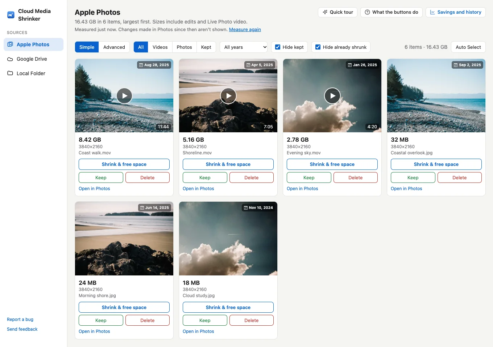
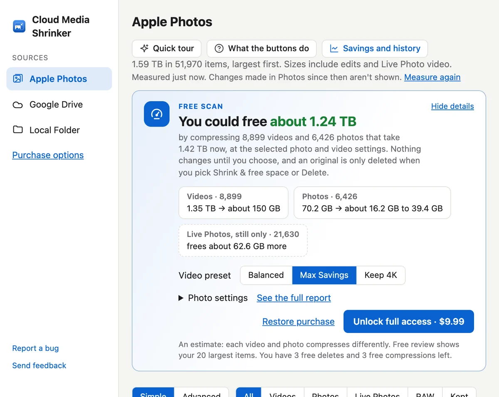
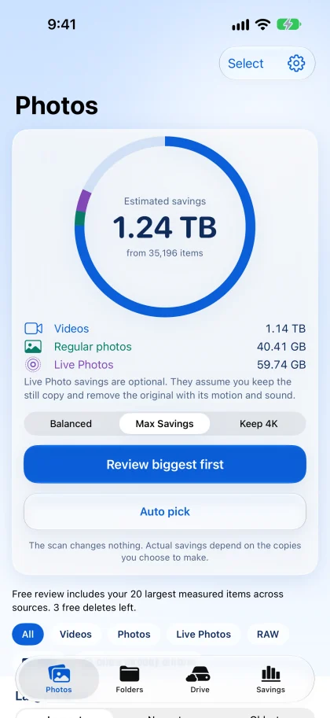
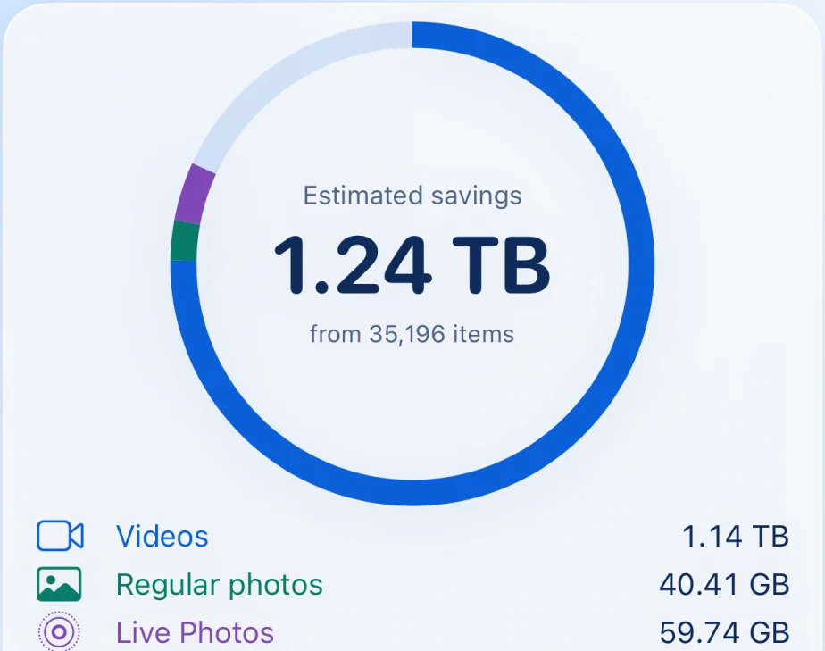
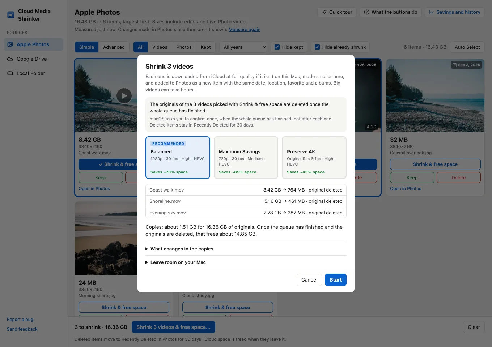
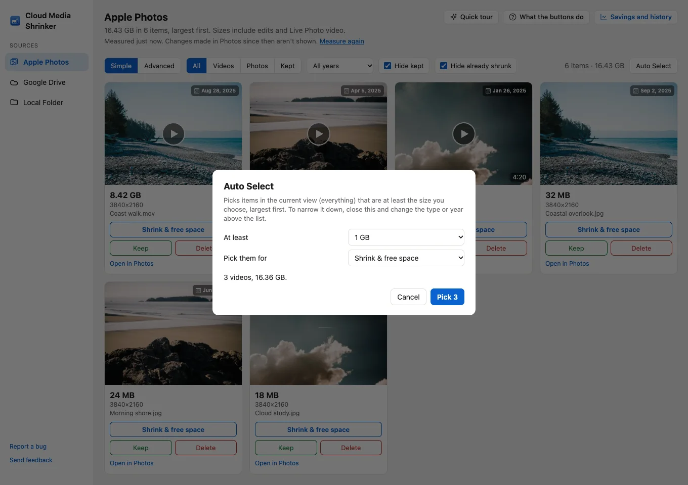
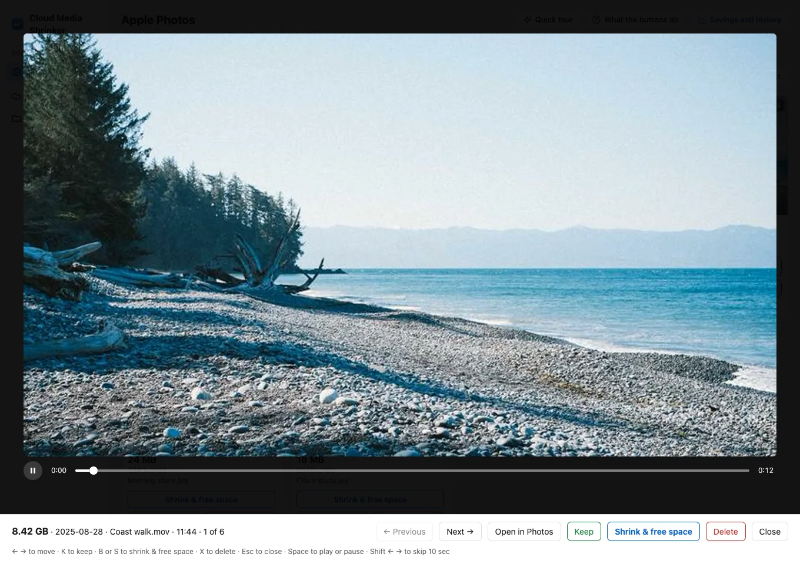
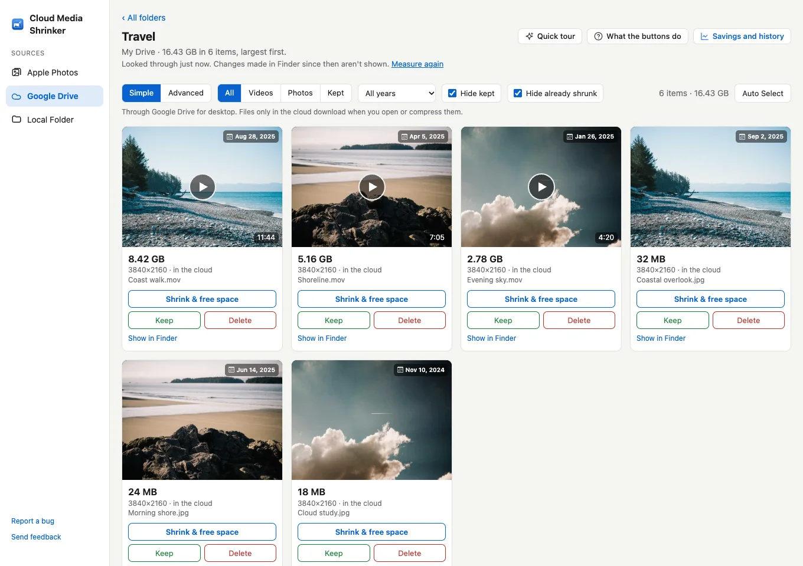

01
Find your biggest files first
Browse Apple Photos from largest to smallest, with file sizes, capture dates, and previews on each tile. Filter by media type or year, and hide items you have kept or already compressed.


Sort your photos and videos by size to find what’s taking up the most space. Compress the files you want to keep, or delete the ones you no longer need.
Review your Apple Photos library and folders on iPhone, iPad, and Mac. On Mac, you can also review folders from Google Drive for desktop.
Requires macOS 13 or later, iOS 27 or later, or iPadOS 27 or later. The App Store lists the price for your region.
The Mac download is free to try: your 20 largest items, 3 compressions and 3 deletes. A one-time license key unlocks everything on up to 3 Macs. Buy a license key · $9.49. It doesn’t unlock the iPhone or iPad app.



Phones record video at a much higher bitrate than the picture needs, because they have to encode it in real time while you film. Cloud Media Shrinker re-encodes it afterwards in HEVC at a lower bitrate, which keeps the picture very close to the original in a much smaller file. The 10 seconds shown here went from 81 MB to 24 MB, and the whole 1 minute 44 second video went from 802 MB to 246 MB.
It's still lossy, so a little fine detail can go. At the high quality Keep 4K uses, most people can't tell. You keep every video, at a fraction of the space.
01
Browse Apple Photos from largest to smallest, with file sizes, capture dates, and previews on each tile. Filter by media type or year, and hide items you have kept or already compressed.

02
Use Keep 4K, Balanced or Max Savings presets in Simple mode. Advanced mode gives you control over resolution, frame rate, format, and quality. Compress supported videos, RAW and JPEG photos, or make a still-only copy of a Live Photo.

03
Auto Select finds items above a size you choose in the current view. Review the selection before starting. Compression batches account for the room your device needs to download originals.

04
Play videos and seek through the timeline before choosing what to keep. For media stored only in iCloud, the preview can take a few minutes to arrive; the app shows download progress when Photos provides it.

05
Review your Photos library or choose a folder on your device. On Mac, you can also select a folder on an external drive or one that Google Drive for desktop shows in Finder. Folder compression saves smaller copies in a Compressed folder inside the folder you chose.

Download Cloud Media Shrinker from the App Store on your iPhone, iPad, or Mac, or download it free for Mac.
Open the app and choose the photos or folders you want it to review.
Allow access to your Photos library or the folders you selected. To review Google Drive files, choose a Drive folder on Mac.
Review your largest items and choose what to compress, keep, or delete.
Report a bug or request a feature on GitHub, or email support@danielyakobian.com.
How to use it: the first scan, reviewing, what happens to originals, unlocking and offer codes.
What's new: what changed in each version, newest first.
What's coming: 1.3, and ideas being looked at.